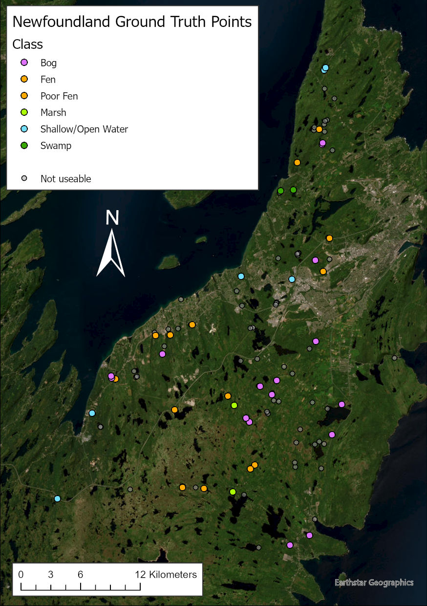

Newfoundland
The Newfoundland data consists of seven shapefiles and one Excel spreadsheet. The data was collected in 2005 at various sites on the Avalon Peninsula (St John’s area).

Challenges encountered
The main challenge with this dataset was that these shapefiles had some duplicate data between them:
-
Some points, as identified by geometry or by the ‘Site’ attribute, were found in multiple shapefiles; other in only one.
-
The attributes were mostly consistent: if the ‘Date’ attribute for a certain point was ‘2005-08-10’, for example, in one shapefile, it was the same in the others.
-
On the other hand, some attributes were inconsistent. In particular, the ‘Class’ and ‘Comment’ attributes sometimes had different values in different files for the same point.
In the case of the class attribute, some of the inconsistency may be attributed to using a finer-grained classification system when collecting the data and using a coarser-grained system when using the data to validate a classified image. For example, there are a couple of cases where one shapefile classified a point as ‘Poor Fen’ and another classifies the same point as ‘Fen’; here and in similar cases, it seems likely to me that the point is really ‘Poor Fen’, but they reclassified it as ‘Fen’ for the accuracy assessment (which indeed does not distinguish among subclasses of fen). On the other hand, when one point is classified as both ‘Upland’ and ‘Swamp’, this seems to be an irreconcilable inconsistency.
The ‘Comment’ attribute was peculiar in that in many cases it said something contradictory to the ‘Class’ attribute – e.g. saying a point is a bog when it is classed as fen. Furthermore, there was an Excel spreadsheet that, although otherwise useful, had a ‘Comment’ column that was even more scrambled in respect of its correspondence with the other columns than the shapefiles. On the whole I did not trust the ‘Comment’ field. Thankfully vegetation notes that were much more consistent with themselves and with the rest of the data were present in the ‘Veg2’ field in multiple files.
-
The report accompanying the data said that they collected 89 field points and that they found 57 of them usable for training/validation of their classification; the others, they said, could not be classified definitively or represented too small an area.
The obvious approach was to identify which points were the 57 that they found to be good quality and use those. Unfortunately, I could not identify which of the 107 total points those were – nor even which were the 89 points they actually visited! Some points did have an attribute explicitly marking them as having been visited; some had date and time attributes; but when I counted these subsets of points, they didn’t add up to 89.
The confusion matrices in the report should have been helpful, as they broke down the points by class, but I still couldn’t identify exactly which points they were referring to.
In the end I simply extracted all points whose classification was unanimous or trivially reconciled and which were explicitly marked as ‘visited’. Subtracting those classed as ‘not wetland’, this yielded 41 points of the original 107; these are depicted in the map above, along with the points that could not be used in a ghostly colour.